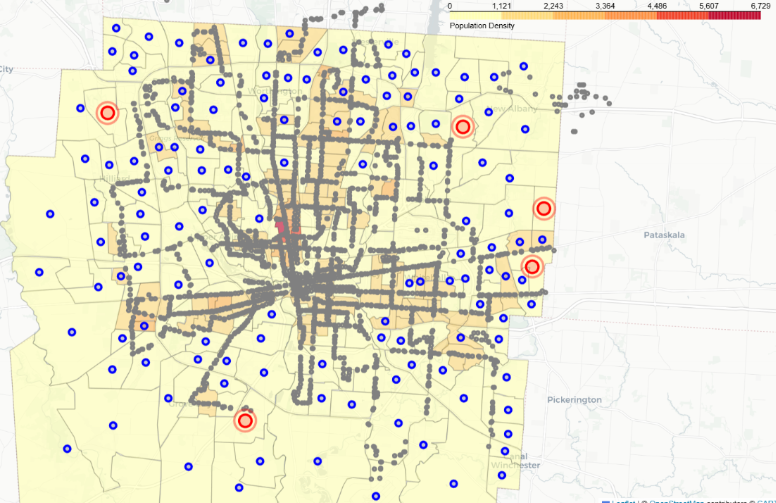

Selected work in optimization, machine learning, and statistical modeling.
01
COTA Ideal Bus Stop Optimization
PythonGurobiMCLPCensus DataTransit
Formulated a Maximum Coverage Location Problem (MCLP) using Python and Gurobi to optimize
bus stop placement across Columbus, integrating U.S. Census and COTA transit data to help
approximately 43,000 residents under infrastructure constraints.
Optimization Model
Full model with variables, constraints, and objective function:
$$
\begin{aligned}
&\text{max } z = \sum_{i \in D} w_i y_i \\
&\text{subject to:} \\
&\quad y_i \leq \sum_{j \in C} a_{ij} x_j \quad \text{for all } i \in D \\
&\quad \sum_{j \in C} x_j = P \\
&\quad x_j \in \{0, 1\} \quad \text{for all } j \in C \\
&\quad y_i \in \{0, 1\} \quad \text{for all } i \in D \\
&\text{where:} \\
&\quad w_i = \text{weight at demand point } i \\
&\quad y_i = \text{binary variable indicating coverage of demand point } i \\
&\quad a_{ij} = \text{binary variable indicating if candidate } j \text{ covers demand } i \\
&\quad x_j = \text{binary variable indicating if a stop is built at candidate } j \\
&\quad P = \text{number of stops to be added (5 in our case)} \\
&\quad C = \text{set of candidate stop locations} \\
&\quad D = \text{set of demand points (census blocks)}
\end{aligned}
$$
Results
Grey dots represent existing stops, blue dots represent potential new stops,
and red dots represent the selected optimal stops. The model fulfills its intended purpose
and provides an efficient, data-driven approach to expanding the COTA bus network.

The table below summarizes each of the five chosen stops. Across all five,
the model adds 42,986 additional residents to the covered population.
Developed a time-series regression model based on energy consumption data to optimize
battery usage efficiency under energy constraints, resulting in projected customer savings of
$1,700+ per year.
The strategy charges the battery during off-peak hours and discharges during peak hours,
letting the customer use stored energy when electricity is expensive and recharge when it's cheap.
$$
\begin{aligned}
&\text{min } \sum_i [\alpha_i \cdot \beta_i + c_i - d_i], \quad i = 1, 2, \ldots, 24 \\
&\text{subject to:} \\
&\quad d_i + \text{grid}_i \leq 13.5 \text{ kW} \quad \forall i \\
&\quad c_i + d_i \leq 13.5 \text{ kW} \quad \forall i \\
&\quad c_i \leq 5 \text{ kW} \quad \forall i \\
&\quad d_i \leq 11.5 \text{ kW} \quad \forall i \\
&\text{where:} \\
&\quad \alpha_i = \text{price of electricity at time } i \\
&\quad \beta_i = \text{appliance electricity demand at time } i \\
&\quad c_i = \text{battery charge at time } i \\
&\quad d_i = \text{battery discharge at time } i \\
&\quad \text{grid}_i = \beta_i + c_i - d_i
\end{aligned}
$$
Assumptions
The battery cannot be charged and discharged simultaneously.
No more than two batteries are fully charged and discharged.
The battery starts with zero stored energy (initial state = 0).
Due to data confidentiality, detailed results cannot be shared publicly. The model achieved significant cost savings and produced a detailed battery optimization schedule.
03
Stock Market Prediction – Bayesian Hierarchical Model
Built a predictive Bayesian hierarchical model to determine which companies and sectors
are likely to produce positive returns. Because companies within the same sector share
economic influences, the model borrows information across companies to produce more stable
probability estimates.
\(y_{scf}\): Observable response - 1 if company \(c\) in sector \(s\) had a positive return at observation \(f\), else 0.
\(\theta_{sc}\): Probability of a positive net return for company \(c\) in sector \(s\).
\(\eta_{sc}\): Log-odds of a positive return for company \(c\) in sector \(s\).
\(\mu_s\): Sector-level mean log-odds of a positive return.
\(\tau_s\): Precision of the log-odds within sector \(s\).
\(s\), \(c\), \(f\): Sector, company, and observation indices respectively.
Key Findings
Based on model output, sectors 1, 2, and 5 are recommended for investment.
Company 10 in sector 2 and company 5 in sector 5 showed the highest estimated probabilities
of positive returns. Among investable sectors, sector 1 exhibited the highest precision,
indicating more consistent company performance and a potentially more stable investment choice.